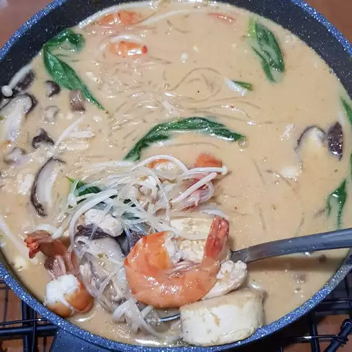

Thai Coconut Soup

Delicious bowl od Thai Coconut Soup
Ingredients
- 1 tablespoon vegetable oil
- 2 tablespoons grated fresh ginger
- 2 teaspoons red curry paste
- 1 stalk lemon grass, minced
- 4 cups chicken broth
- 3 tablespoons fish sauce
- 1 tablespoon light brown sugar
- 3 (13.5 ounce) cans coconut milk
- 1/2 pound fresh shiitake mushrooms, sliced
- 1 pound medium shrimp - peeled and deveined
- 2 tablespoons fresh lime juice
- salt to taste
- 1/4 cup chopped fresh cilantro
Making
-
Heat oil in a large pot over medium heat. Add ginger, curry paste, and lemongrass; cook and stir in the hot oil for 1 minute.
-
Gradually stir in chicken broth, then stir in fish sauce and brown sugar; reduce heat to low and simmer for 15 minutes.
-
Add coconut milk and mushrooms; cook and stir until mushrooms are soft, about 5 minutes.
-
Add shrimp; cook until no longer translucent, about 5 minutes. Stir in lime juice; season with salt and garnish with cilantro.
Previous Page